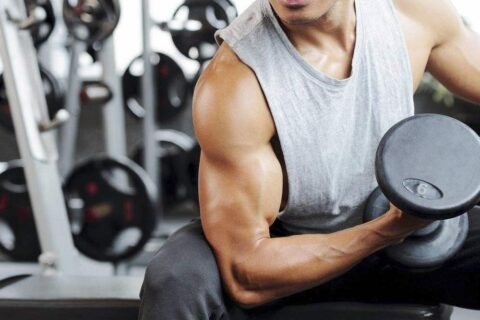

Welcome to Ejercicios efectivos de bíceps
Top 10 ejercicios de bíceps para mujeres y hombres | Eurofitness
2021.06.26 19:47Busca tu club Por qué Eurofitness Ciclos Formativos Blog Hostels FAQS Español Català Selecciona tu club: Corporate Español Busca tu club Por qué Eurofitness Ciclos Formativos Blog Hostels FAQS Club Natura Eurofitness Corporate Eurofitness EDU Eurofitness Tendencias
Selecciona tu centro Eurofitness
Perill Club Artesanía Club Badalona Club Can Cuyàs Club Can Dragó Club El Sorrall Club Horta Club Sant Cugat Club Sant Miquel Club Szczecin Club ŠUS Club Aiguajoc Club Supera Club Natura CLUB Eurofitness Corporate Eurofitness EDU Eurofitness TendenciasTop 10 ejercicios de bíceps para mujeres y hombres
Desde Eurofitness y como profesionales del deporte, queremos ofrecerte los 10 ejercicios de bíceps idóneos tanto para hombres como para mujeres. Si quieres saber más sobre otros consejos relacionados con el Fitness y con el estado físico óptimo al que quieres llegar te animamos a consultar otros artículos relacionados. Muy atento porque estos ejercicios te ayudarán a sacar el mejor partido al estado de forma de tus brazos.
1.- Curl de bíceps con mancuerna
Este es sin lugar a dudas uno de los ejercicios de bíceps más famosos y sencillos de realizar. Una de sus principales ventajas es la comodidad que da para hacerlo, con lo que pueden hacerse varias repeticiones y series sin problemas. Con dos mancuernas, con la espalda recta y en una posición cómoda estando de pie elevamos las mancuernas de forma alterna o al mismo tiempo manteniendo nuestras piernas semiflexionadas . Es idóneo durante estos ejercicios de bíceps realizar un pequeño giro de muñeca al levantar nuestra mancuerna.
2.- Curl de bíceps estilo martillo
El segundo de nuestros ejercicios de bíceps propuestos tiene muchas similitudes con el anterior. Es otro de los ejercicios de bíceps más comunes. Está indicado para ambos sexos y en este caso flexionaremos el bíceps elevando la mancuerna pero manteniendo nuestras palmas mirando al interior de nuestro cuerpo en todo momento . Se trata de levantarlas agarrándolas como un martillo. En este ejercicio trabajaremos todos los tramos del bíceps y conseguiremos hacer mayor estímulo en toda la zona.
3.- Dominadas supinas
Este es otro de los ejercicios más fáciles de realizar . Está indicado para cualquier persona que practique deporte gracias a lo accesible que resulta. Puede practicarse incluso en la calle siempre que contemos con una barra horizontal de la que colgarnos. El objetivo es trabajar con el peso de nuestro propio cuerpo para ejercitar nuestros bíceps. Es uno de los ejercicios más eficaces. Para hacerlo, simplemente debemos agarrarnos de la barra horizontal situada por encima de nosotros y con las palmas mirando hacia nuestro cuerpo. Para realizar correctamente el ejercicio, nuestra barbilla debe superar la altura de la barra. Después de ello, volveremos a la posición original culminando así una repetición. Es recomendable, después de haber superado la barra permanecer un segundo en la parte alta y posteriormente bajar de forma suave.
4.- Curl bíceps Scott
En este ejercicio nos valdremos de uno de los bancos para bíceps Scott. Para realizarlo, se recuesta la parte superior del brazo sobre la parte acolchada que queda debajo de nuestros brazos y frente a neustro pecho. La palma de la mano debe estar mirando hacia delante. Puede hacerse con mancuernas, cable o barra. Para realizarlo, debemos sujetar el peso a la altura de los hombros para completar la primera parte. Posteriormente, inhalaremos aire mientras bajamos la barra o el peso que hayamos escogido hasta que nuestros brazos queden extendidos. Desde ese punto, volveremos al punto inicial.
5.- Curl de bíceps en polea baja con cuerda
En este quinto de nuestros ejercicios de bíceps los trabajaremos con una polea. Es un ejercicio que da muy buen resultado: para realizarse se coloca la polea en la parte baja y se emplea la cuerda que generalmente es empleada para el tríceps haciendo el movimiento similar al del ejercicio del curl martillo.
6.- Curl de polea baja a una mano
Este ejercicio es similar al anterior. Sin embargo, en este se trata de emplear la polea con una sola mano para trabajar el los músculos del bíceps de forma aislada. Se irán alternando ambos brazos en las diferentes repeticiones.
7.-Curl de polea en alto
Nos colocaremos esta vez entre dos poleas en alto. Después de ajustar el peso adecuado para nosotros, nuestros brazos los colaremos formando una letra V respecto a las poleas. Nos cogeremos de las agarraderas y tiraremos de ellas hasta la flexión. Una vez en ese punto debemos esperar tres segundos para volver con nuestros brazos a la posición inicial.
8.- Curl con barra
No podía faltar entre nuestros ejercicios de bíceps otro de los más populares. Emplearemos una barra elevándola a la altura de nuestro pecho, en su parte superior. Las rodillas deben permanecer flexionadas y nuestro trasero hacia fuera con los brazos abiertos. El pecho debemos mantenerlo hacia delante en todo momento. Una vez que esté levantado, se cambiará la posición de nuestras muñecas para que los brazos permanezcan más cerrados, con las palmas mirando hacia arriba. Los codos quedarán pegados al tronco y levantaremos la barra lentamente hasta flexionar completamente el brazo y volver a bajarla lentamente.
9.- Flexiones diamante
Este es otro de los ejercicios de bíceps más interesantes por poder realizarse en cualquier lugar, incluida nuestra propia casa. Las manos permanecerán en el suelo algo atrasadas respecto a nuestros hombros . Los dedos pulgar e índice deben permanecer en contacto. Elevaremos nuestro cuerpo extendiendo nuestros brazos y con nuestra mirada al frente y la espalda recta para bajar hasta tocar el suelo.
10.- Curl de bíceps supino en banco declinado
Este ejercicio está indicado para aumentar el ejercicio de los bíceps. Realizaremos curl de bíceps con mancuernas pero en un banco declinado. Con esta posición conseguimos incrementar el trabajo del bíceps obteniendo un mejor rendimiento.
Esperamos que este artículo te haya servido de ayuda para aprender ejercicios de bíceps beneficiosos para ti. Te animamos a consultar cómo podemos ayudarte a mejorar de forma con las mejores instalaciones deportivas en Barcelona y otros puntos. El mejor equipo de profesionales estará encantado de ayudarte a conseguir tus objetivos.
Descarga nuestro último e-book GRATIS
DESCARGARDescarga nuestro último e-book GRATIS
DESCARGARTe contamos la importancia de la hidratación en el deporte
Te contamos la importancia de la hidratación en el deporte La hidratación …
Leer másLos beneficios del zumo de naranja natural | Te lo contamos
Los beneficios del zumo de naranja natural | Te lo …
Leer más¡No te pierdas los mejores ejercicios para tonificar el abdomen este verano!
¡No te pierdas los mejores ejercicios para tonificar el abdomen …
Leer másTe explicamos cuáles son los beneficios de tomar el sol
Te explicamos cuáles son los beneficios de tomar el sol En …
Leer más Copyright 2021 Aviso Legal Cookies Privacidad ¿Quiéres trabajar con nosotros? Español CatalàHazte socio. alta Online
La manera más fácil de hacerte socio de Eurofitness.
Hazte socio ahora on.line y disfruta de las ventajas exclusivas sólo para altas on.line.
Te lo ponemos fácil: seleccionas el Club, llenas los datos personales, arrecifes la oferta que más se ajuste a tus necesidades y haces el pago ¡!
¿Quiéres una invitación?
Te invitamos a que disfrutes del club Eurofitness que quieras.
Contacta
Déjanos tus datos y contactaremos contigo.
Solicita tu invitación
Te invitamos a que disfrutes de Eurofitness. Rellena el formulario con tus datos y dispondrás de una invitación personal.
Hazte socio
Disfruta de las instalaciones y servicios que te ofrece Eurofitness.
Contacta
Déjanos tus datos y contactaremos contigo.
Formulario de contacto
Déjanos tus datos y contactaremos contigo.
¿Quieres una invitación?
Te invitamos a que disfrutes del club Eurofitness que quieras.
Hazte socio
Disfruta de las instalaciones y servicios que te ofrece Eurofitness.
